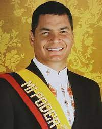

Rafael Correa(1963- )
Rafael Correa es un economista y político ecuatoriano que fue presidente de
Ecuador desde 2007 hasta 2017. Nacido el 6 de abril de 1963 en Guayaquil, Ecuador, Correa
promovió políticas de izquierda y adoptó una postura antiimperialista durante su
presidencia. Durante su mandato, implementó reformas sociales y económicas que incluyeron
una mayor inversión en programas de bienestar social y una mayor intervención estatal en
la economía. Aunque recibió críticas por su estilo de liderazgo autoritario, también fue
apoyado por gran parte de la población ecuatoriana.